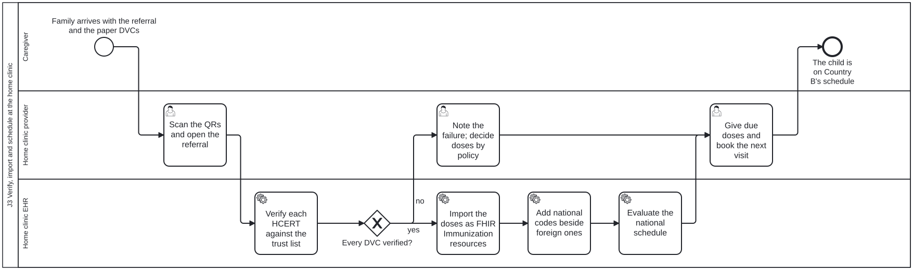
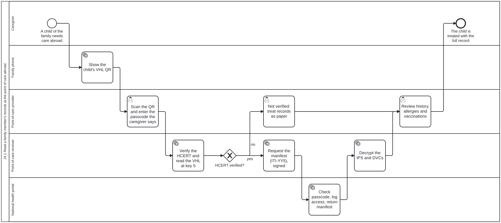

Un proceso de negocio por recorrido. Cada carril es un rol de la página de personas; cada tarea indica la habilidad que la realiza. La fuente BPMN de cada proceso está en processes/content/, copiada en la guía como input/business-processes/. Seleccione el título de un paso para abrirlo, o abra un proceso en el visor de procesos, que enumera cada tarea y la habilidad que la realiza.
| Proceso | Carriles | BPMN |
|---|---|---|
| J1 Emitir en el País A los DVC de las dosis al nacer del recién nacido | Cuidador, Vacunador de la clínica de nacimiento, Sistema emisor de la clínica de nacimiento, Clave de firma del emisor | j1-birth-dose-dvc.bpmn |
| J2 Detectar y derivar a un lactante no registrado en el País B | Cuidador, Agente comunitario de salud, Aplicación del CHW | j2-chw-discovery-referral.bpmn |
| J3 Verificar, importar y programar en la clínica del país de residencia | Cuidador, Profesional de la clínica del país de residencia, EHR de la clínica del país de residencia | j3-clinic-verification-schedule.bpmn |
| J4.0 Emitir los registros de la familia como VHL en un solo teléfono | Cuidador, Portal nacional de salud, Clave de firma del emisor, Teléfono familiar | j4-0-family-vhl-issuance.bpmn |
| J4.1 Leer los registros de un miembro de la familia en el punto de atención en el extranjero | Cuidador, Teléfono familiar, Profesional del punto de atención, Receptor del punto de atención, Portal nacional de salud | j4-1-vhl-point-of-care.bpmn |
J1 Emitir en el País A los DVC de las dosis al nacer del recién nacido

Id. del proceso Process_J1BirthDoseDvc. Abrir en el visor de procesos.
J1, Nacimiento transfronterizo y vacunación inicial. En el País A (XXR, el país de nacimiento), el hospital provincial administra a un recién nacido que no es nacional de ese país las dosis al nacer de Hep B y BCG y emite un DVC firmado por dosis (DVCMinPreQual en el subclaim -6) como QR en papel, sin necesidad de un número de identidad nacional (el ejemplo de la sección 12, QR Code Generation, de la guía de la OMS es uno de estos pares). El sistema del hospital es el Emisor (Issuer, SMART Trust) y la parte HCERT del Compartidor de VHL (VHL Sharer); la clave privada permanece con quien la custodia (firma en dos fases, STT-ISS-004, STT-COS-006). Que el DSC de XXR, bajo su CSCA, figure en la lista de confianza de la GDHCN es una PRECONDICIÓN de la emisión, declarada más abajo, no un paso. El cuidador es el Titular (Holder, SMART Trust, smart-trust-phw) y el Titular de VHL (VHL Holder, IHE ITI VHL).
Lista de verificación de tareas: j1-birth-dose-dvc.checklist.md.
J2 Detectar y derivar a un lactante no registrado en el País B

Id. del proceso Process_J2ChwDiscovery. Abrir en el visor de procesos.
J2, Regreso al país, detección y derivación por el agente comunitario de salud (CHW). De vuelta en el País B (el país de residencia, XXK), donde reside la familia, el agente comunitario de salud encuentra, durante una visita domiciliaria, a un lactante nacido en el extranjero que no figura en el padrón del hogar. Sin conexión, la aplicación del CHW añade al lactante al hogar (un recurso Group de FHIR, mediante un formulario de captura estructurada de datos), lee los DVC extranjeros sin verificarlos (lectura sin verificación, STT-VER-011: la lectura de triaje se detiene antes de la consulta de confianza y marca cada campo como no verificado), guarda las dosis como notificadas por la familia, no verificadas (Immunization.primarySource false), y deriva al lactante a la clínica para su verificación. Todo queda en cola en el teléfono y se sincroniza la próxima vez que haya señal. La aplicación del CHW es un Receptor (Receiver, SMART Trust, smart-trust-phw) que se detiene deliberadamente antes de la verificación de confianza; el cuidador proporciona el VDHC como Titular (requisito provide-a-vhl-to-a-receiver de smart-trust-phw).
Lista de verificación de tareas: j2-chw-discovery-referral.checklist.md.
J3 Verificar, importar y programar en la clínica del país de residencia

Id. del proceso Process_J3ClinicVerification. Abrir en el visor de procesos.
J3, Verificación en la clínica y generación del calendario, en el País B. La historia clínica electrónica de la clínica (Receptor en SMART Trust y smart-trust-phw, lado Receptor de VHL en IHE ITI VHL) guarda una copia de la lista de confianza de la GDHCN, que el ancla de confianza (Trust Network Anchor; IHE Trust Anchor) distribuye y que el País B, un Participante de la Red de Confianza (Trust Network Participant), obtiene (retrieve-pki-material de smart-trust-phw). La carga de los documentos DID es una PRECONDICIÓN de esta visita, no un paso de ella: la clínica puede estar sin conexión todo el tiempo, por lo que la lista con la que verifica es la que actualizó por última vez, aproximadamente cada semana, cuando el CHW visita la clínica de base o la oficina sanitaria del distrito. Verifica cada DVC extranjero en el orden de STT-VER-001 con el documento DID del DSC de XXR, importa las dosis verificadas con su procedencia, añade el código del calendario nacional junto a cada código de vacuna extranjero (ConceptMap; la enfermera decide sobre cualquier producto sin correspondencia) y evalúa el calendario nacional, que determina que corresponden las dosis de las 6 semanas y las programa.
Lista de verificación de tareas: j3-clinic-verification-schedule.checklist.md.
J4.0 Emitir los registros de la familia como VHL en un solo teléfono

Id. del proceso Process_J40FamilyVhl. Abrir en el visor de procesos.
J4.0, Viaje de la familia al extranjero, “Una familia, un teléfono”. Antes de viajar, el cuidador que tiene el único teléfono compartido de la familia solicita al portal nacional del País B los registros de cada miembro de la familia, eligiendo para cada uno un código de acceso que la familia pueda decir en voz alta y una fecha de caducidad (por ejemplo, 14 días); el portal registra esa elección como el consentimiento del titular para compartir (Consent de FHIR, IHE Privacy Consent on FHIR). El portal, que es Compartidor de VHL (VHL Sharer, IHE ITI VHL) y Emisor (Issuer, SMART Trust, smart-trust-phw), emite un enlace sanitario verificable (VHL) protegido por código de acceso para cada miembro: los documentos (IPS, DVC) cifrados como JWE (STT-VHL-007) detrás de un manifiesto ITI-YY5, y el enlace en el formato de carga útil de SMART Health Links en la clave 5 del HCERT (STT-VHL-001, STT-VHL-002), firmado con el DSC del País B. El teléfono compartido guarda los QR para el cuidador, el Titular de VHL. Los registros permanecen alojados en el País B: el QR solo contiene un puntero y una clave.
Lista de verificación de tareas: j4-0-family-vhl-issuance.checklist.md.
J4.1 Leer los registros de un miembro de la familia en el punto de atención en el extranjero

Id. del proceso Process_J41VhlFetch. Abrir en el visor de procesos.
J4.1. En el extranjero, un niño de la familia necesita atención. El cuidador, Titular de VHL (VHL Holder, IHE ITI VHL; Holder en SMART Trust y smart-trust-phw, requisito provide-a-vhl-to-a-receiver), abre su QR en el teléfono familiar y dice el código de acceso. El sistema del hospital, un Receptor de VHL (VHL Receiver; Receiver en SMART Trust y smart-trust-phw), verifica el HCERT con la lista de confianza de la GDHCN, solicita el manifiesto mediante ITI-YY5 con una HTTP Message Signature (STT-VHL-005, STT-VHL-006, STT-VHL-008) y descifra los documentos (STT-VHL-007). El portal del País B comprueba el código de acceso, devuelve el manifiesto y registra cada solicitud, concedida o rechazada, como un AuditEvent en el país de residencia (IHE BALP). Si el HCERT no se verifica, no hay verificación digital: no se sigue el VHL y los registros se tratan como papel. Como en J3, la carga de los documentos DID es una PRECONDICIÓN de esta visita, no un paso de ella: el hospital verifica con su copia en caché de la lista de confianza y no necesita conexión para hacerlo. Actualiza esa caché cada noche o cada hora, mientras que un sitio sin conexión, como la clínica de J3, la actualiza aproximadamente cada semana.
Lista de verificación de tareas: j4-1-vhl-point-of-care.checklist.md.